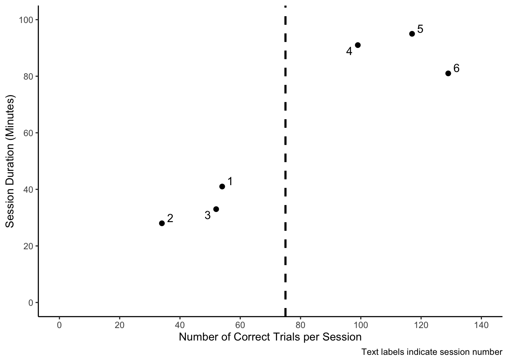
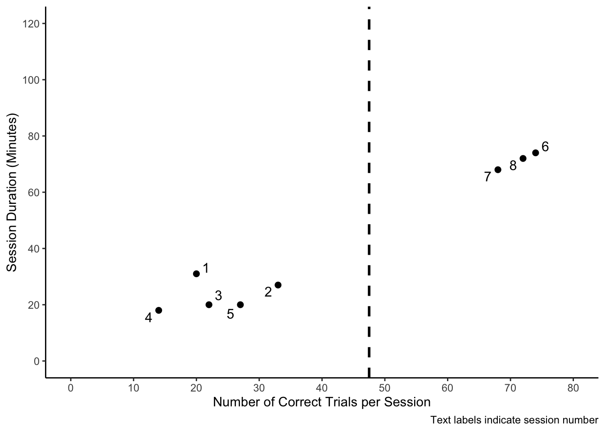

Duration
The purpose of this page is to explore the relationship between session duration and the number of accurate trials completed during the session. Taken together, these variables can represent client endurance, where a linear relationship is hypothesized, insofar session duration was expected to increase as the number of accurate trials per session increased.
Patchwork Plots
This first series of plots use the patchwork package to combine two plots into one image. Plots displayed on the left side of the images represent the change in session duration between the baseline and intervention phases, and the plots on the right side of the images display the change in the number of corret trials obtained per session across the baseline and intervention phases.
SAJE

LELI

GIAD

Endurance and Accuracy Relationship Plots
These scatter plots display the linear relationship between session duration and the number of correct trials observed per session. These plots appear to be a good representation of treatment endurance. The number of correct trials is outlined as the x-axis and can be interpreted as a strong predictor of session duration (minutes), suggesting that session duration was dependent upon the number of correct trials the participant obtained per session.
SAJE

LELI

GIAD
Phase Averages
SAJE
LELI
LELI